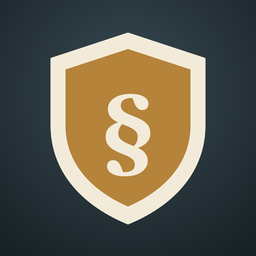

Sachkunde-Pirsch
Waffensachkunde nach § 7 WaffG lernen.
Sachkunde-Pirsch bereitet dich auf die Sachkundeprüfung nach § 7 Waffengesetz vor. Du lernst in kurzen Runden mit den Fragen aus dem Katalog des Bundesverwaltungsamts.
Die App entscheidet, was als Nächstes dran ist: neue Fragen, fällige Wiederholungen und frühere Fehler. Du musst nichts einstellen.
Was die App kann
- Lernrunden mit zehn Fragen und sofortiger Rückmeldung
- Fehlertraining und gemerkte Fragen
- Probeprüfung mit 35 Fragen in 45 Minuten
- Prüfungsreife je Sachgebiet und ein Geweih, das mit deinem Wissen wächst
Preis
Die App ist kostenlos zu laden. 60 Fragen und eine Probeprüfung sind frei. Die Vollversion mit allen 573 Fragen ist ein einmaliger Kauf für 9,99 €. Kein Abo, keine Werbung.
Quelle
Die Fragen stammen aus dem vom Bundesverwaltungsamt veröffentlichten Sachkundekatalog nach § 7 WaffG. Die Probeprüfung ist eine eigene Zusammenstellung, über Fragenzahl und Bestehen entscheidet der jeweilige Prüfungsausschuss.
Deine Daten
Die App hat kein Konto und keinen Server. Dein Lernstand bleibt auf deinem Gerät. Mehr dazu in der Datenschutzerklärung.
Anbieter: Andreas Fleps, Schwärzweg 60, 74219 Möckmühl, Deutschland · andreas.fleps@proton.me
Diese App ist kein Produkt des Bundesverwaltungsamtes.